Details
What information helps Forum respond with a useful answer instead of a generic reply.
Contact / 01
Contact opens as a clear government decision hub: what Forum offers, who it helps, why it matters, and which route to take first.
The first screen combines positioning, proof, primary action, and fast internal navigation, so people can act immediately or compare the rest of the contact route with context.
Plain service hero
Select the closest route and Forum keeps the next step, proof, and follow-up expectation aligned with public service access.
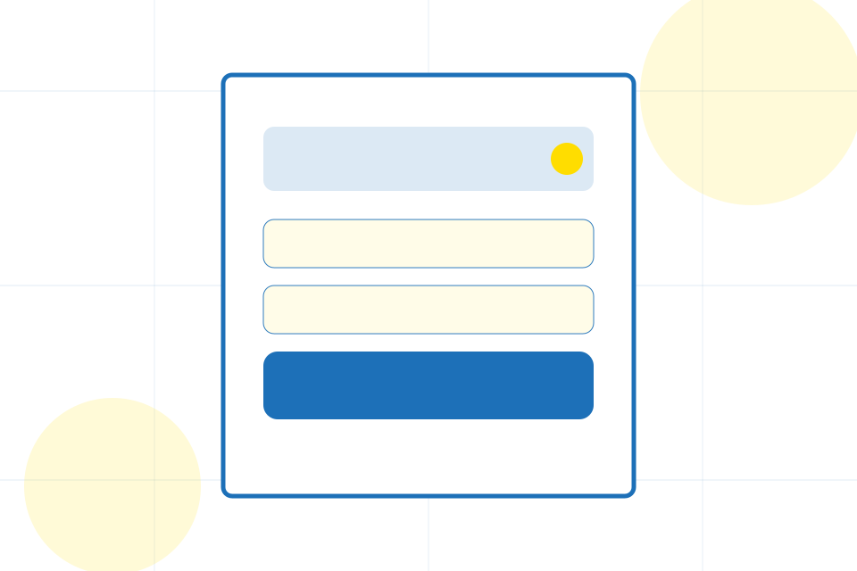
Contact / 02
Phone makes the contact path concrete: what to send, how the response works, and what Forum needs before visitors start a request.
The section reduces contact friction by naming the channel, expected detail, privacy path, and response expectation instead of dropping visitors into a generic form.
Start RequestWhat information helps Forum respond with a useful answer instead of a generic reply.
How the visitor should think about response, urgency, location, or availability.
The expected next message keeps scope, timing, and the first practical step clear.
Contact / 03
Email makes the contact path concrete: what to send, how the response works, and what Forum needs before visitors start a request.
The section reduces contact friction by naming the channel, expected detail, privacy path, and response expectation instead of dropping visitors into a generic form.
Start Request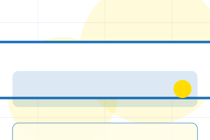
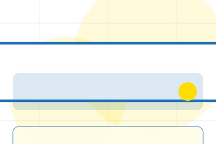
What information helps Forum respond with a useful answer instead of a generic reply.
Contact / 04
Offices makes the contact path concrete: what to send, how the response works, and what Forum needs before visitors start a request.
The section reduces contact friction by naming the channel, expected detail, privacy path, and response expectation instead of dropping visitors into a generic form.
Start RequestWhat information helps Forum respond with a useful answer instead of a generic reply.
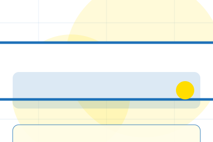
How the visitor should think about response, urgency, location, or availability.
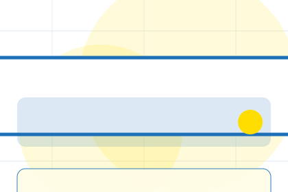
The expected next message keeps scope, timing, and the first practical step clear.
Contact / 05
Emergency makes the contact path concrete: what to send, how the response works, and what Forum needs before visitors start a request.
The section reduces contact friction by naming the channel, expected detail, privacy path, and response expectation instead of dropping visitors into a generic form.
Start RequestWhat information helps Forum respond with a useful answer instead of a generic reply.
How the visitor should think about response, urgency, location, or availability.
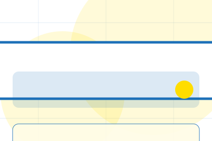
The expected next message keeps scope, timing, and the first practical step clear.
Contact / 06
Hours makes the contact path concrete: what to send, how the response works, and what Forum needs before visitors start a request.
The section reduces contact friction by naming the channel, expected detail, privacy path, and response expectation instead of dropping visitors into a generic form.
Start RequestWhat information helps Forum respond with a useful answer instead of a generic reply.
How the visitor should think about response, urgency, location, or availability.
The expected next message keeps scope, timing, and the first practical step clear.
Contact / 07
Map makes the contact path concrete: what to send, how the response works, and what Forum needs before visitors start a request.
The section reduces contact friction by naming the channel, expected detail, privacy path, and response expectation instead of dropping visitors into a generic form.
Start RequestWhat information helps Forum respond with a useful answer instead of a generic reply.
How the visitor should think about response, urgency, location, or availability.
The expected next message keeps scope, timing, and the first practical step clear.
Contact / 08
Routing makes the contact path concrete: what to send, how the response works, and what Forum needs before visitors start a request.
The section reduces contact friction by naming the channel, expected detail, privacy path, and response expectation instead of dropping visitors into a generic form.
Start Request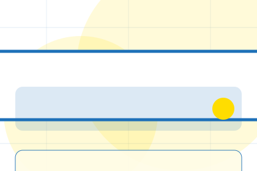
What information helps Forum respond with a useful answer instead of a generic reply.
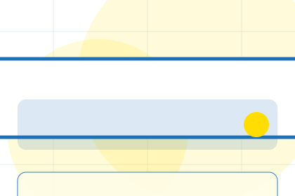
How the visitor should think about response, urgency, location, or availability.
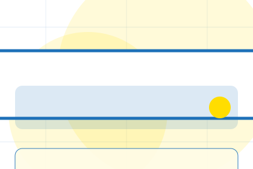
The expected next message keeps scope, timing, and the first practical step clear.
Contact / 09
Submit makes the contact path concrete: what to send, how the response works, and what Forum needs before visitors start a request.
The section reduces contact friction by naming the channel, expected detail, privacy path, and response expectation instead of dropping visitors into a generic form.
Start RequestWhat information helps Forum respond with a useful answer instead of a generic reply.
How the visitor should think about response, urgency, location, or availability.
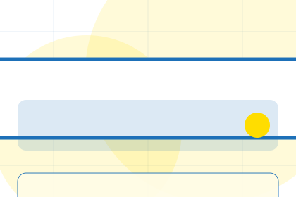
The expected next message keeps scope, timing, and the first practical step clear.
Contact / 10
Forum closes the contact route with a clear action, a quick reminder of the value, and a low-friction way to start a request.
Visitors who are ready can use the primary action. Visitors who are still comparing can scan the section links, proof, and support routes before they start a request.
Start RequestThe final block keeps the choice simple: act now, compare one more proof route, or send enough detail for a focused response.
Start Request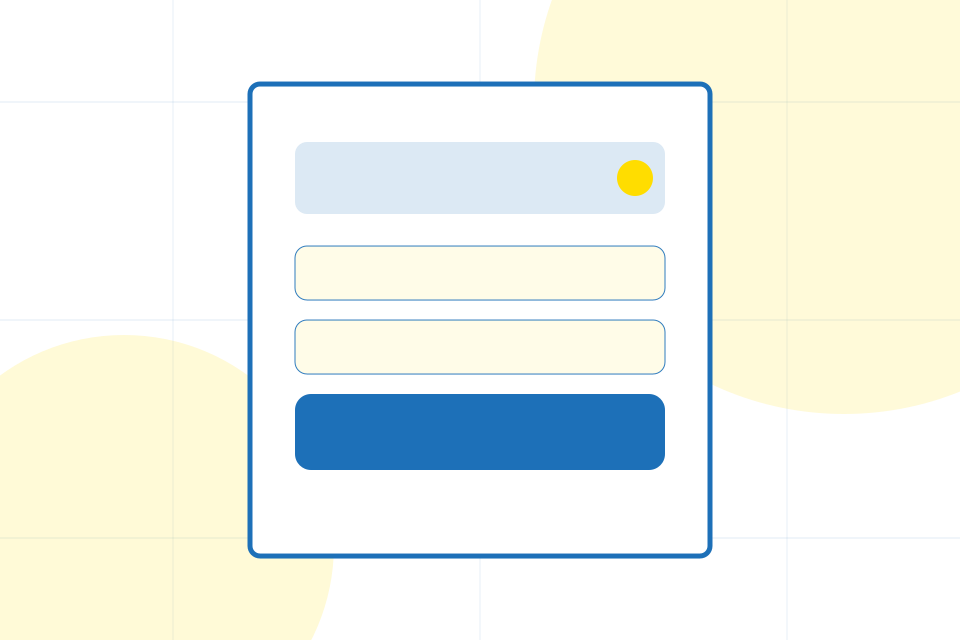
public service access
A civic service site with task-first pages, blue start buttons, form patterns, and accessibility-first structure. Contact ends with a direct path to start a request, plus enough context for visitors who still need to compare.
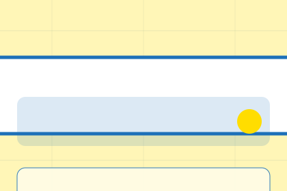
Start RequestPublic service content must be verified by the responsible authority before publication.